Fahrenheit 451
Introductie

Censorship and suppression of thoughts and ideas
Het begin
Fahrenheit 451 verteld het verhaal van brandweerman (“fireman”) Guy Montag, een brandweerman die met veel trots illegale boeken verbrand.
Na bepaalde tijd en een aantal specifieke gebeurtenissen begint hij de waarde van zijn beroep in twijfel te trekken. Na een tijdje begint Montag te worstelen met zijn bestaan en zijn plaats in een onderdrukkende samenleving waarin censuur de norm is.

Verwarring
Het twijfel en geworstel van Montag wordt sterker nadat hij vriendschap raakt met zijn 17-jarige buurvrouw, Clarisse McClellan.
Clarisse is nieuwsgierig naar de wereld en keurt de technologie waarvan het nu afhangt af, Montag realiseert zich dat hij ongelukkig is en niet langer van zijn vrouw, Mildred houdt, Mildred weigert de realiteit onder ogen te zien, ze dompelt zich onder in interactieve televisie en zeeschelpradio en is verslaafd aan kalmerende middelen.

Samenleving

Op een avond komt Montag thuis en ontdekt dat Mildred een overdosis slaappillen heeft genomen. Montag belt onmiddelijk de hulpdiensten, wanneer ze aankomen beginnen ze met Mildred's maag leeg te pompen en haar een complete transfusie te geven met verschillende technologische instrumenten. De medici weten nog te vertellen dat dergelijke overdoses veel voorkomen.
De volgende ochtend gaat Mildred op een robotachtige manier door met haar dagelijkse routine, zonder zich de aflevering van de vorige avond te herinneren en weigert erover te praten.
Brandweerman
Montag word opgeroepen. Ze hebben een van de grootste bibliotheken in lange tijd gevonden die zo snel mogelijk verbrand moet worden. Help Montag met zijn uniform aan te trekken.


Kracht van het boek
Montag vraagt zich af waarom boeken worden gezien als gevaarlijk en waarom sommige mensen zo loyaal zijn aan boeken. Gedreven door toenemende onzekerheid en nieuwsgierigheid steelt Montag een boek uit een collectie die hij eigelijk moest vernietigen.
" Welke kracht schuilt er in de boeken? "
Op de plaats van de verbranding is hij geschokt toen de eigenaar van de boeken, een oudere vrouw, weigert haar huis te verlaten. In plaats van haar huis te verlaten steekt ze zichtzelf in brand samen met haar grote collectie boeken. Na deze gebeurtenis vraagt Montag zich af of er geluk en vrede gevonden kan worden in deze boeken. Misschien is dit de reden waarom deze mensen zoveel moeite doen om hun boeken te beschermen.
